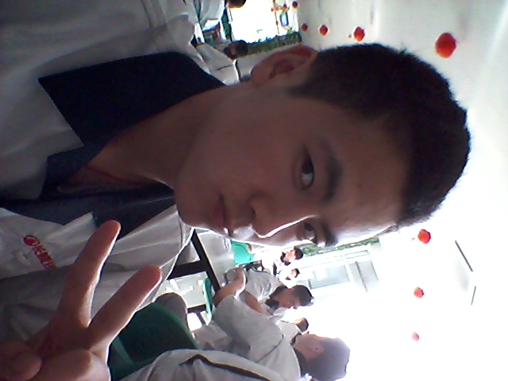
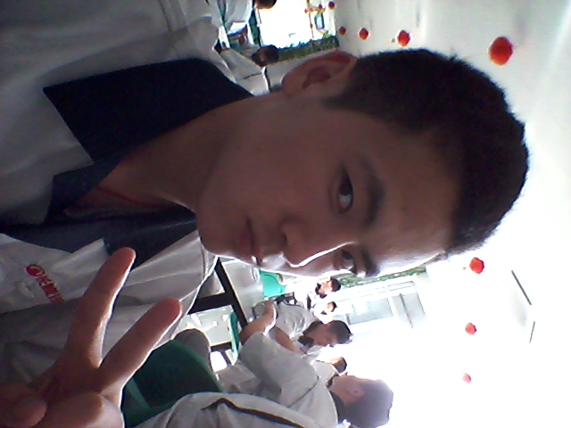

我想我会一直孤单
我找不到理由，也想不出办法。每天大多数时间脑袋里都是你，你现在在做什么，以及我们的回忆。我不敢给你打电话，怕耽误你工作。偶尔给你发信息你也不会回。我承认，我想你，并且不安。深深地想念和深深地不安。我试过不去想，不想你，不想那些过去，不看手机里你的照片和信息。每一次你出现在我的脑海，就很难离去。我尝试着，用工作看电影四处转转来占据自己的头脑，赶走你的影子。但我不得不说，这很难。很难。
不知不觉中，我把你当做生命中最重要的那个人之一。同时我希望你也是这样。但现在看来，希望的事一般不能成真。以前我对你很满意，真的，我以为并且愿意能够和你走很远很远。可如今，你的态度，你对我做的事很让我难过。
我知道你爱玩，一直都知道。你喜欢冒险，喜欢浪漫，喜欢一切有挑战性的事物。我们一起走的路是那么多，满满的美好的回忆，这一切，让我怀念，让我珍惜。我以为，我已经成为你生命中重要的那个人。但现在发现，称之为过客完全不为过。我想听你说，根本不是你想的那样子，我在乎你，在乎我们的感情，在我心里你是最重要的那个。但我知道，这些话，你这辈子都不会对我说。
今天我发了条短信给你。布，剪刀，石头。后来又补发一条，这三个你选择哪个。重点不是你的选择，而是我发的剪刀石头布。我说，我会在咱俩结婚的时候告诉你。但我怕没那个机会了。不如在这里告诉你，它的含义是，我爱你。
在你打完扑克后我们聊到了十二点。现在过去了八分钟。我还在三楼的窗口打这些字。现在的你在为因打扑克而没有和我打电话解释着。你愿意解释，我很高兴。起码你还没恶劣到那个地步。其实，你发不发都无所谓了，咱俩说了那么多，你愿意听也好，不愿意听也罢，总之我告诉了你我心里的想法，虽然没听到我想要的甚至我不想要的回答，但我全部说出去了，这就够了。我以为你是理解我的，或者说你是离我心最近的，知道我想要什么。但是，我还是想多了。这么多年，还是没有人真正理解我，以前的我是别人喜欢干什么我就跟着干什么，抽烟，通宵，处对象，逃课。现在，我不会在乎别人做什么，对我什么想法，反正我做认为是对的事，就足够了。而你，你说我让你知道了什么是爱。但是，我却没教会你如何去爱一个人，我想改变你，但发现，这很难，还不如让你变性来的简单。而爱情却也不是尝试改变对方，而是理解，包容。可惜，我还没上升到那个高度，也许未来我会是那个样子，但那时，我不知道在我身边的还是不是你。
我有三次恋爱，而第三次，也就是你带给我的，却是让我最伤神的。我不知道这到底是不是爱了。我只是很单纯的，希望我们很好的在一起，很快乐，彼此关心，彼此呵护，这很难吗？一个月打一次电话，这是恋人吗。我真的怀疑了，这到底是不是我想要的爱。我不敢问，你爱我吗。其实，当问出这句话时我就已经知道答案了。而你是个善良的女孩，你不会骗我，你会说，你别问了。呵，这时我反倒希望你骗我。即使我讨厌欺骗。
今天是我从咱俩在一起以来第一次直呼你的名字，可以看出我有多生气。但你不会关心，现在的你，只想做好自己的事，不会在乎我的感受，我的想法。或许，我说得有着严重了，我只是发泄，我对你的怨气，因为现在不能对你说，你会头疼。也许，以后你有机会看到这些话，但那时你已经无所谓了，不是吗。
现在的我，正是处在人生的路口，一个错误的选择就有可能让我万劫不复。我不知道未来在哪里，但我希望，那里有个你，所以我希望你会给我勇气，或许你不能告诉我我该往哪里走，但我希望你会陪着我，在我茫然失落的时候告诉我，我在这里。所以我不断的和你发信息，打电话，只想知道，即使你不在我身边，你的心还和我靠在一起，但今天，用你的话说，我失望了，或者从你的态度上，我绝望了。我本不该有期待。原来，我一直都是一个人。一直都是。
沈雅园，允许我再直呼你一次。我希望你过好自己的生活，追逐自己的梦想，不遗余力去实现心中的目标。我相信，只要你坚持，你一定会做到。曾经的我，是多么想和你一直在一起。
以后，我只要做好我自己，不再奢望，不再心存期待。豁达的人永远不会受到伤害。而你，我会慢慢的，把你放回原来的位置。
人生若只如初见，多么好的一句话，我还是喜欢，当时的你。
祭奠，我最后一次的爱情。如果是爱情的话。谁先认真，谁就输了。这句话，是真的。
不知不觉中，我把你当做生命中最重要的那个人之一。同时我希望你也是这样。但现在看来，希望的事一般不能成真。以前我对你很满意，真的，我以为并且愿意能够和你走很远很远。可如今，你的态度，你对我做的事很让我难过。
我知道你爱玩，一直都知道。你喜欢冒险，喜欢浪漫，喜欢一切有挑战性的事物。我们一起走的路是那么多，满满的美好的回忆，这一切，让我怀念，让我珍惜。我以为，我已经成为你生命中重要的那个人。但现在发现，称之为过客完全不为过。我想听你说，根本不是你想的那样子，我在乎你，在乎我们的感情，在我心里你是最重要的那个。但我知道，这些话，你这辈子都不会对我说。
今天我发了条短信给你。布，剪刀，石头。后来又补发一条，这三个你选择哪个。重点不是你的选择，而是我发的剪刀石头布。我说，我会在咱俩结婚的时候告诉你。但我怕没那个机会了。不如在这里告诉你，它的含义是，我爱你。
在你打完扑克后我们聊到了十二点。现在过去了八分钟。我还在三楼的窗口打这些字。现在的你在为因打扑克而没有和我打电话解释着。你愿意解释，我很高兴。起码你还没恶劣到那个地步。其实，你发不发都无所谓了，咱俩说了那么多，你愿意听也好，不愿意听也罢，总之我告诉了你我心里的想法，虽然没听到我想要的甚至我不想要的回答，但我全部说出去了，这就够了。我以为你是理解我的，或者说你是离我心最近的，知道我想要什么。但是，我还是想多了。这么多年，还是没有人真正理解我，以前的我是别人喜欢干什么我就跟着干什么，抽烟，通宵，处对象，逃课。现在，我不会在乎别人做什么，对我什么想法，反正我做认为是对的事，就足够了。而你，你说我让你知道了什么是爱。但是，我却没教会你如何去爱一个人，我想改变你，但发现，这很难，还不如让你变性来的简单。而爱情却也不是尝试改变对方，而是理解，包容。可惜，我还没上升到那个高度，也许未来我会是那个样子，但那时，我不知道在我身边的还是不是你。
我有三次恋爱，而第三次，也就是你带给我的，却是让我最伤神的。我不知道这到底是不是爱了。我只是很单纯的，希望我们很好的在一起，很快乐，彼此关心，彼此呵护，这很难吗？一个月打一次电话，这是恋人吗。我真的怀疑了，这到底是不是我想要的爱。我不敢问，你爱我吗。其实，当问出这句话时我就已经知道答案了。而你是个善良的女孩，你不会骗我，你会说，你别问了。呵，这时我反倒希望你骗我。即使我讨厌欺骗。
今天是我从咱俩在一起以来第一次直呼你的名字，可以看出我有多生气。但你不会关心，现在的你，只想做好自己的事，不会在乎我的感受，我的想法。或许，我说得有着严重了，我只是发泄，我对你的怨气，因为现在不能对你说，你会头疼。也许，以后你有机会看到这些话，但那时你已经无所谓了，不是吗。
现在的我，正是处在人生的路口，一个错误的选择就有可能让我万劫不复。我不知道未来在哪里，但我希望，那里有个你，所以我希望你会给我勇气，或许你不能告诉我我该往哪里走，但我希望你会陪着我，在我茫然失落的时候告诉我，我在这里。所以我不断的和你发信息，打电话，只想知道，即使你不在我身边，你的心还和我靠在一起，但今天，用你的话说，我失望了，或者从你的态度上，我绝望了。我本不该有期待。原来，我一直都是一个人。一直都是。
沈雅园，允许我再直呼你一次。我希望你过好自己的生活，追逐自己的梦想，不遗余力去实现心中的目标。我相信，只要你坚持，你一定会做到。曾经的我，是多么想和你一直在一起。
以后，我只要做好我自己，不再奢望，不再心存期待。豁达的人永远不会受到伤害。而你，我会慢慢的，把你放回原来的位置。
人生若只如初见，多么好的一句话，我还是喜欢，当时的你。
祭奠，我最后一次的爱情。如果是爱情的话。谁先认真，谁就输了。这句话，是真的。
续写于，8月2日，22:48。这个时候你还没给我发晚安，或许又是没发过来。无所谓了。
亲爱的，对不起，我误解了你，我写这篇东西时心情不好，很乱，满脑子都是对你的抱怨。现在，我知道了，其实一直都是我做的不好，你只是遵循一个女人应有的本能罢了，与情有染与爱无关。我多想回到以前的样子，以前的我和你，一起散步，一起打篮球，一起去图书馆，一起做的刺激浪漫的事。可是，我们都回不去了。写到这我心很痛。那些过去了的，就真的回不去了，哪怕回到当时不开心的时候，也是不可能了。
我在道个歉吧，虽然你看不见，上次给你系鞋带的事情上我突然爆发的男人的虚荣让我们很不愉快，我相信它一直横在你心里，所以，对不起。
园园。我多想一直这么叫你。
评论 0 0 0